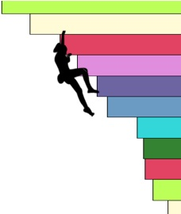

Every rock climb is different, demanding its own blend of mental and physical skills, and every climber comes to the crag with her own unique strengths, preferences, and goals. A climbing area or park often contains hundres or thousands of individual climbing routes, and a climber can only tackle a handful of the routes on a trip. CragCrunch provides a framework for discovering new climbing routes that are right for YOU.